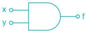
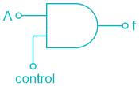
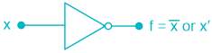
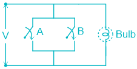
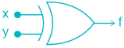
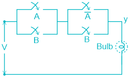

01 Logic Gates
Lgic gates
Introduction
Logic gates are the fundamental building blocks of any digital system.
The function of each logic gate can be represented by a Boolean expression. The number of output combination will be 2 N for ‘N-input’ froth table.
●
Classification of Logic Gates
Basic Gates (NOT, AND, OR)
(i)
AND Gate –
| Input | Output | |
|---|---|---|
| A | B | f |
| 0 | 0 | 0 |
| 0 | 1 | 0 |
| 1 | 0 | 0 |
| 1 | 1 | 1 |

Logical expression: f = x.y or f = x ^ y It follows Commutative law: y.x = x.y It follows Associative law: (x.y).z = x.(y.z)
Control inputs of AND gate

Case I : Disable input (if control = 0)
A Control f 0 0 0 1 0 0
Case II : Enable input (if control = 1)
A Control f 0 1 0 1 1 1
●
Unused input of AND gate
The Unused input of AND gate can be connected in one of the following ways:
(i) Logic 1 or also known as Pull or method (ii) One of the used input (iii) In case of TTL logic, it can be left unconnected (open or floating)
Note : In case of TTL logic, open or floating input act as logic 1.
●
AND Gate using diodes –
| inpu t | Status of Diodes | f | ||
|---|---|---|---|---|
| x | y | D 1 | D 2 | |
| 0 | 0 | ON | ON | 0 |
| 0 | 1 | ON | OFF | 0 |
| 1 | 0 | OFF | ON | 0 |
| 1 | 1 | OFF | OFF | 1 |
●
Switching circuit diagram of AND gate
(ii)
OR Gate –
x y f 0 0 0 0 1 1 1 0 1 Logical expression f = x + y 1 1 1 OR gate follows both commutative & associative laws.
●
Enable & disable inputs –
For ‘OR’ gate logic ‘O’ is enable input because the change in the input causes the change in the o/p. For ‘OR’ gate logic ‘1’ is Disable input because due to change in the input, output remains the same.
●
Unused input can be connected to –
(i) Logic ‘O’ (Enable) or pull-down. (ii) Left open or floating in case of ECL logic (iii) Any of the used input
OR gate using diodes
input Status of Diodes Output
| x | y | D 1 | D 2 | F |
|---|---|---|---|---|
| 0 | 0 | OFF | OFF | 0 |
| 0 | 1 | OFF | ON | 0 |
| 1 | 0 | ON | OFF | 1 |
| 1 | 1 | ON | ON | 1 |

●
The switching circuit diagram for OR gate
(iii)
NOT Gate -

Input Output 0 1 1 0
●
Switching circuit –
●
When even number of NOT gates are connected, it acts like bistable multivibrator (basic memory
element)
When even number of NOT gates without feedback act like a buffer.

Buffers are used to increase the driving capacity of a gate.
Universal Gate (NAND, NOR)
(i)
NAND Gate –
Input f x y 0 0 1 0 1 1 1 0 0 1 1 0
●
Or f = x ↑ y 𝑓= 𝑥. 𝑦 It follows Commutative law. But, it does not follow Associative law.
●
Control input of NAND gate:
Logic 0 = Disable input Logic 1 = Enable input
Unused input of NAND gate:
The unused input (or inputs) of NAND gate is connected in exactly the same manner as the unused input of AND gate.
●
Switching circuit to diagram:
(ii) NOR gate –
’
Logical expression: 𝑓= 𝑥+ 𝑦= 𝑥. 𝑦 𝑜𝑟 𝑓= 𝑥↓𝑦
It obeys commutative law but it does not obey associative law.
●
Control input of NOR gate –
(i) Logic ‘0’ is Enable input (Act as Inverter) (ii) Logic ‘1’ is disable input
●
Unused input –
The unused input of NOR gate is connected in exactly the same manner as the unused input of OR gate.
Switching circuit diagram -

Special Purpose Gates (EXOR, EXNOR)
(i) Exclusive – Or gate (EXOR)

x y f 0 0 0 0 1 1 1 0 1 1 1 0
●
EXOR function is an ODD function.
●
Control Inputs:
(i) Logic ‘O’ = Enable input (Act as Buffer) (ii) Logic = ‘1’ = Act as Inverter
●
Properties of EXOR gate:
(i) A ⨁ A = 0 (ii) A ⨁ A ̅ = 1 (iii) A ⨁ 0 = A (iv) A ⨁ 1 = A (v) A ⨁ A ⨁ A = A (vi) If A ⨁ B = C, then B ⨁ C = A, A ⨁ C = B, A ⨁ B ⨁ C = 0 (vii) A ⨁ A ⨁ A ⨁ _ _ _ _ _ n times = 0; when n is even = A; when n is odd
(ii) EXNOR Gate –

x y f
0 0 1
0 1 0
1 0 0 This Gate is also known as ‘Equivalence logic’ or ‘Coincidence Logic’
This Gate is used in Equality detector circuits.
It obeys the commutative law & Associative law.
1 1 1
Control Input
Logic ‘0’ = Act as inverter Logic ‘1’ = Act as Buffer
Properties:
(i) A ⊙ A = 1 (ii) A ⊙ 1 = A (iii) A ⊙ O = A (iv) A ⊙ A ̅ = 0 (v) A ⊙ A ⊙ A = A (vi) A ⊙ A ⊙ A ⊙ A = 1 (vii) If A ⊙ B = C Then, B ⊙ C = A A ⊙ C = B A ⊙ B ⊙ C = 1 (viii) A ⊙ A ⊙ A ⊙ A _ _ _ _ _ _ n times = A; when ‘n’ is odd = 1; when ‘n’ is even
●
Switching circuit diagram –

For even number of variables, EXOR & EXNOR are complement of each other.
For odd number of variables, EXOR & EXNOR equal to each other.
Bubbled Logic
Bubbled OR ⇔ NANAD Bubbled AND ⇔ NOR Bubbled NOR ⇔ AND Bubbled NAND ⇔ OR
Realization of Logic Gates
| Logic Gate | Number of NAND Gate required | Number of NOR Gate required |
|---|---|---|
| NOT | 1 | 1 |
| AND | 2 | 3 |
| OR | 3 | 2 |
| EXOR | 4 | 5 |
| EXNOR | 5 | 4 |
Points to remember
A two level AND- OR implementation is equivalent to a two level NAND – NAND implementation.
A two level AND-OR implementation is obtained when the circuit is implemented from a SOP expression.
A two-level OR- AND implementation is equivalent to a Two-level NOR-NOR implementation.
A two-level OR-AND implementation is obtained when the circuit is implemented from a POS expression.
●
x ̅ .y and x.y ̅ are known as ‘ Inhibition functions ’.
●
(x ̅ + y) and (x + y ̅ ) are known as ‘ Implication functions ’.
●
If one of the input to an AND or OR Gate is inverted, then it becomes ‘ Inhibitor’ .
When odd number of NOT gate connected General time period of square wave generated T = 2NT PD Where, N = odd number of NOT gates connected in feedback path.
This circuit is also known as ‘square wave generator’ or ‘A stable multivibrator’ or ‘Ring oscillator’.
EXOR gate is also called controlled inverter.
For SOP implementation AND-OR logic is used.
For POS implementation OR-AND logic is used.
2 In Ex-OR gate, if the number of minterms in Boolean expression is 𝑛
2 AND Gate is known as ‘Detector logic’.